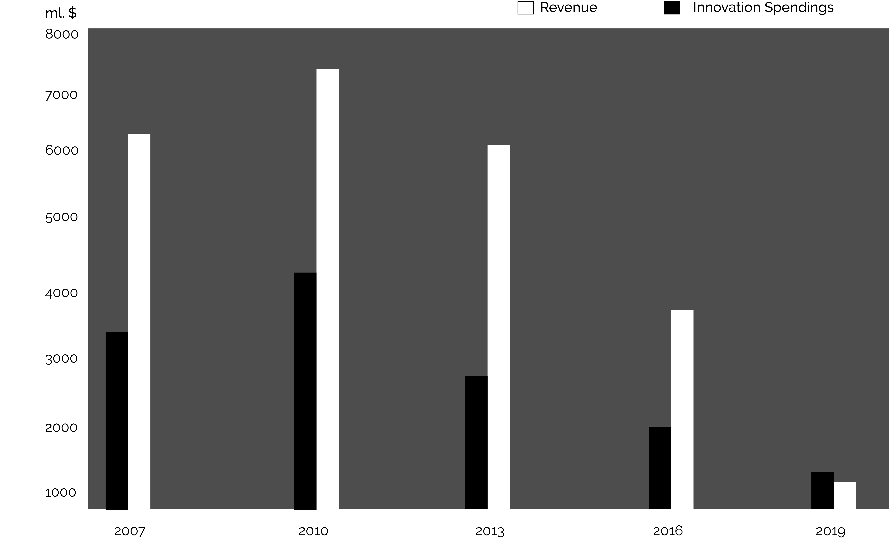

Our strategy in a nutshell. Explained by our CCO.
The driving belief behind the creation of Analogy is that in the current publishing landscape a few big digital intermediaries extract most of the value out of the publication process. Platforms like Spotify and Google end up in the position of leaders, wiping out or absorbing all the resistance. As a small publisher it might seem to be there’s no motivation left to fight against these Goliaths of the industy.
After spending years researching the production models of everyday publishers Analogy found over 15 noteworthy issues that prevent publishers from competing with large online platforms. While industry leaders are extremely up to date and use technologies like AI, Big Data, The Cloud, Wearables and VR, traditional publishers don't. Due to this lack of interest in cutting edge technology, they lose up to 94% of their revenue stream to all those costy players around them, involved in the distribution and materialization of their content.

↑ figure showing the decline of the revenue due to lower innovation spendings.
Analogy believes we can spark the interest of publishers with our beatiful, powerful and remarkably easy to use system that empowers publishers to do what they really want to do.
By combining the ways tech giants create their product, Analogy is able to offset many of the costs, both in money and time, that old-school publishing practices run into.
Our aim is very simple! To help publishers optimise their practice by using future-proof models that are focused on outsourcing both financial expenses and labour. In this way, we want to give publishers back the power to compete with the giants of the industry.
Analogy delivers highly personalised optimisations for each of our clients.As each publisher has their own special approach to their trade, each of their publishing workflows is unique too! We help by combining our cutting edge Analogy method and workflow with the current practice of our clients in order to deliver to the desired standards.
Our in-house developed workflow makes use of some standard existing methods such as:
Neural networks / machine learning (similar to Google Books’s way of learning about sentence structure)
Crowdsourced data editing (Similar to Facebook’s feed algorythms)